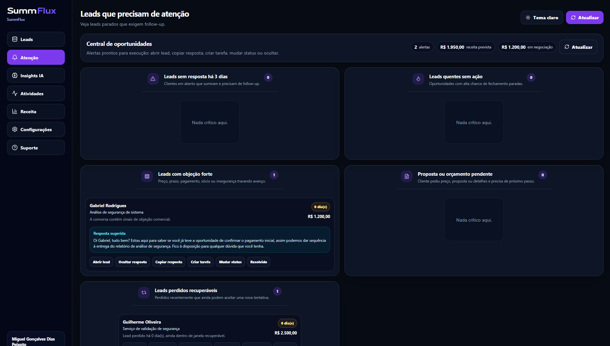

CRM inteligente para WhatsApp Web
Transforme conversas do WhatsApp em oportunidades de venda.
A SummFlux analisa a conversa que seu vendedor escolher, encontra sinais de compra, resume a negociação e salva o lead no CRM com próxima ação, objeções e valor estimado.
Prioridade
quem tem mais chance de fechar
Follow-up
quem precisa de resposta agora
Receita
oportunidades e impacto financeiro

*Foram utilizados dados fictícios nas imagens.
Clique ou toque na imagem para dar zoom
Feito para empresas que vendem pelo WhatsApp e precisam saber quem responder, quando responder e quanto existe em negociação.
O que a IA encontra
Menos conversa perdida. Mais oportunidade visível.
Em cada análise, a SummFlux transforma mensagens soltas em informação comercial: quem é o cliente, o que ele quer, quanto pode valer, qual objeção apareceu e qual próximo passo faz sentido.
Produto
O que muda na rotina comercial.
O vendedor não precisa reler tudo. O gestor não precisa perguntar lead por lead. A informação importante sai da conversa e aparece organizada no CRM.
Resumo em segundos
Veja o que foi discutido em conversas longas sem reler dezenas de mensagens.
Próximo passo claro
Saiba se é hora de mandar proposta, chamar no follow-up ou avançar para fechamento.
Objeções visíveis
Preço, prazo, dúvida e insegurança deixam de ficar escondidos no meio da conversa.
Receita acompanhável
Veja quais oportunidades estão abertas, ganhas, perdidas ou em risco de esfriar.
Pipeline sem planilha
Cada lead fica com status, valor, probabilidade, origem e histórico em um só lugar.
Equipe sob controle
Usuários, permissões e atividades ajudam o dono a enxergar a operação comercial.
CRM em funcionamento
O painel mostra onde agir primeiro.
A tela de atenção separa leads parados, propostas pendentes, objeções fortes e oportunidades recuperáveis para sua equipe não depender de memória.
Priorize
Veja quem precisa de resposta antes de esfriar.
Veja quem precisa de resposta antes de esfriar.
Entenda
Abra o lead com resumo, objeções e próxima ação.
Abra o lead com resumo, objeções e próxima ação.
Acompanhe
Controle valor, status, histórico e receita prevista.
Controle valor, status, histórico e receita prevista.
Clique ou toque na imagem para dar zoom
Como funciona
1
2
3
Da conversa ao CRM em três passos.
A SummFlux funciona no fluxo que a equipe já usa: WhatsApp Web no navegador, análise por IA e lead organizado no CRM.
Abra a conversa
O vendedor entra no WhatsApp Web e escolhe a conversa que quer transformar em oportunidade.
A IA analisa
Com apenas um clique a SummFlux identifica produto, valor, intenção de compra, objeções e próxima ação recomendada.
O lead vai para o CRM
Depois da confirmação, tudo fica salvo com status, histórico e prioridade para acompanhamento.
Segurança e privacidade
As conversas continuam dentro da sua operação.
A IA analisa apenas a conversa acionada pelo usuário autorizado. As informações ficam vinculadas à empresa contratante e aparecem somente para quem tem acesso ao CRM.
Acesso por empresa
Um cliente da SummFlux não vê dados, mensagens ou análises de outro cliente.
IA para apoiar a venda
A IA resume e aponta sinais comerciais. A decisão final continua com o vendedor.
Histórico organizado
O gestor acompanha o que aconteceu com cada lead sem depender de prints ou memória.
Planos
Mais indicado
Escolha pelo volume de conversas.
Comece organizando os primeiros leads e suba de plano quando sua equipe precisar analisar mais conversas, acompanhar follow-ups e controlar a receita com mais profundidade.
Starter
Para quem vende pelo WhatsApp e quer parar de controlar lead em conversa solta ou planilha.
R$ 49,90/mês
- Até 200 análises por mês
- 1 usuário
- CRM completo
- Resumos automáticos das conversas
- Qualificação de leads por IA
- Insights básicos
- Pipeline de vendas
- Histórico dos leads
Ideal para quem recebe até algumas dezenas de conversas por semana e quer sair das planilhas.
Contratar StarterPro
Para equipes que recebem muitos leads e precisam saber quem responder primeiro.
R$ 149,90/mês
- Tudo do plano Starter
- Até 1.000 análises por mês
- Até 10 usuários
- Central de Oportunidades
- Follow-up inteligente
- Leads sem resposta há 3 dias
- Leads com objeções identificadas
- Propostas pendentes
- Leads perdidos recuperáveis
- Insights avançados de vendas
- Histórico completo de atividades
- Receita prevista
Ideal para empresas que recebem dezenas ou centenas de leads por mês.
Contratar ProBusiness
Para empresas com vários vendedores, alto volume de leads e necessidade de gestão previsível.
R$ 299,90/mês
- Tudo do plano Pro
- Até 5.000 análises por mês
- Usuários ilimitados
- Priorização automática de oportunidades
- Relatórios avançados
- Equipes comerciais ilimitadas
- Controle completo da operação
- Suporte prioritário
- Acesso antecipado a novas funcionalidades
- Integrações avançadas futuras
Ideal para empresas com múltiplos vendedores, grande volume de leads e gestão em escala.
Contratar Business
FAQ
Dúvidas antes de colocar na operação.
Respostas diretas sobre instalação, análise das conversas, privacidade e uso pela equipe.
É um aplicativo instalado no Google Chrome. Na SummFlux, ele aparece dentro do fluxo do WhatsApp Web para transformar a conversa escolhida pelo vendedor em lead organizado no CRM.
A instalação é feita pelo Google Chrome. Depois de instalar a extensão, o vendedor acessa o WhatsApp Web normalmente e usa a SummFlux para analisar conversas. Veja o passo a passo na página tutorial de instalação.
Não. A análise acontece quando um usuário autorizado aciona a extensão em uma conversa específica. A IA usa esse conteúdo para gerar resumo, qualificação, objeções, próxima ação e registro comercial.
As análises ficam no CRM da empresa contratante. Apenas usuários autorizados daquela empresa conseguem visualizar os leads, resumos e históricos.
Não. Ele organiza, resume e prioriza. A negociação, o relacionamento e a decisão final continuam com o vendedor ou gestor.
Sim. Os planos Pro e Business foram pensados para equipes com mais usuários, maior volume de análises e controle mais forte de follow-up, receita e histórico.
Quer ver a SummFlux funcionando na sua operação?
Envie seus dados e receba um contato para entender qual plano faz sentido para o volume de conversas da sua empresa.